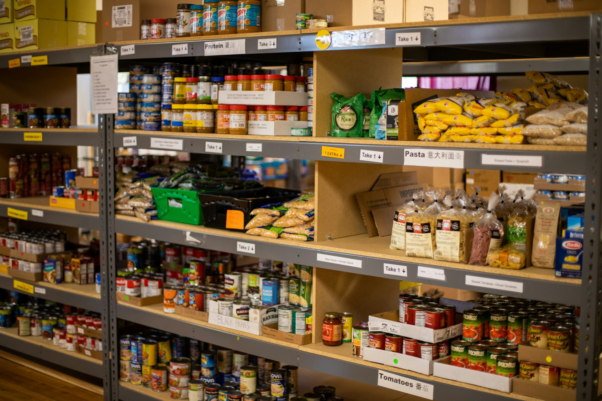
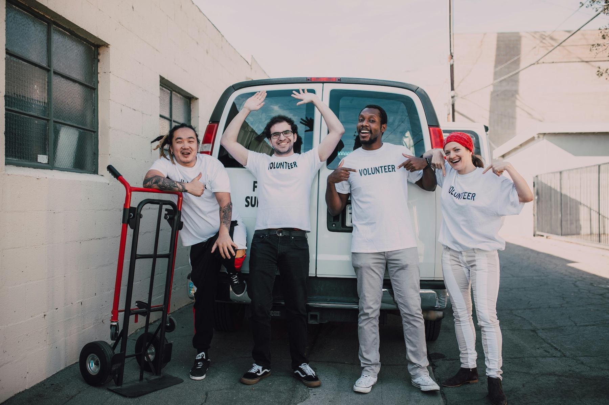

With My Friends
Volunteering with your friends or youth group is a great way to serve the community and grow closer together. The opportunities listed below all require a bit of planning in advance. Read on to find what fits your group!
Utah Food Bank
The food bank buys food and accepts donations to distribute to various organizations and directly to households. They can take a single dollar and stretch it $8 worth of food! This volunteering activity is great for youth groups and work groups.
- Serve people experiencing food insecurity all across the State of Utah
- Participate in various projects, such as sorting donations, and packing cases with non-perishable food to send to households
- 3150 S 900 W, South Salt Lake, UT 84119
Youth Resource Center
The resource center for homeless youth is sponsored by the Volunteers of America. They provide counseling and mental health services for youth ages 15-22. Youth can drop in for help or stay at the shelter as needed.
- Serve youth experiencing homelessness
- Plan, bring, prepare, serve, and clean up after meals
- 888 S 400 W, Salt Lake City, UT 84101